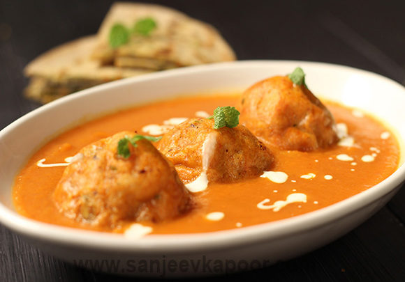

Malai-kofta

Malai kofta is the vegetarian version of meatballs. The balls can be made with a gourd (Lauki) or unripe bananas. They are cooked in a gravy of tomato, cream, and spices, the balls soaked in the flavors. People generally serve it with bread or rice. Although it is originally a Punjabi dish, its flavorsome appeal has been adopted by many restaurants over the globe.
Ingredients:
- 4 Large potatoes, boiled
- 250 gms paneer (cottage cheese)
- 50 gms maida
- 1 tbsp Coriander Leaves, chopped
- 3 Onions
- 1 tbsp ginger garlic paste
- 2 Tomatoes
- 200 ml malai or cream
- 2 tbsp raisins and cashew nuts
- 50 gms cashew nuts paste
- 1/2 tsp haldi (turmeric)
- 1/2 tsp red chilli powder
- 1/2 tsp kitchen king masala
- 1 tbsp Kasturi methi (dry Fenugreek)
- to taste salt
- 1 tbsp sugar
How to make Malai Kofta:
Prepare the koftas:
- Refrigerate the boiled potatoes for 4 to 6 hours as this makes it easy to cook koftas.
- Mash the boiled potatoes, paneer, maida. The mix should not be too hard or too soft. Add salt, chopped coriander leaves and mix well.
- Cut the raisins and cashew nuts into very small pieces and add 1/2 tsp of sugar to the mix.
- Heat up the oil for deep frying.
- Roll out the balls from the dough you prepared and stuff the dry fruit mix in the centre.
- Fry the koftas and if they break in hot oil then dust them with dry maida before putting them in.
Prepare the gravy:
- Fry some onion, ginger garlic paste and tomato paste.
- Mix the cashew nut paste with 2 Tbsp of warm milk and pour it into the paste.
- Except kasturi methi, add all the dry masala into the paste and saute till the oil separates itself.
- Add and a half cup of water and simmer the gravy till it's done.
- Add cream/malai, 1 Tbsp of sugar and kasturi methi.
- Simmer the gravy till the oil starts separating and once it's done, put the fried koftas into the gravy and serve hot with chapatis.
Back to top
Home